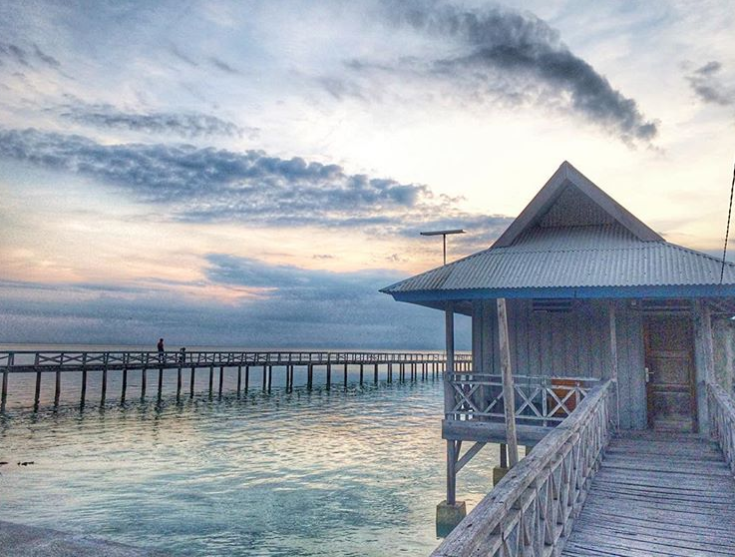
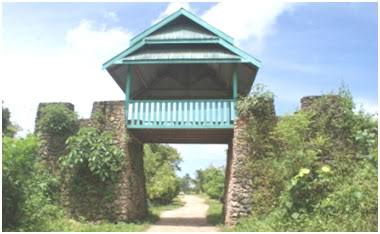
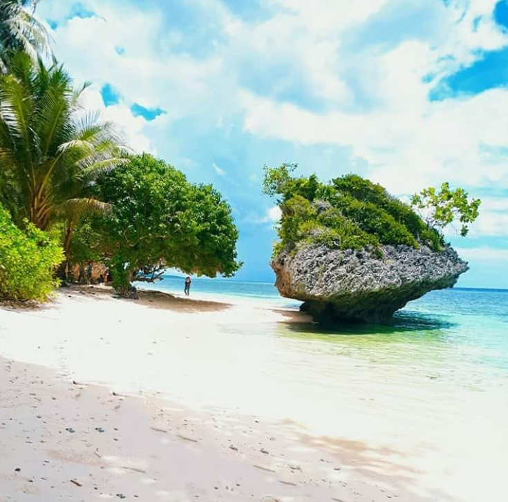

Wisata pantai bone di buton utara
Berlokasi di Desa Malalanda, Kecamatan Kulisusu, Kabupaten Buton Utara. Wisata alam ini memiliki pantai pasir putih yang membentang sepanjang 4 KM.... Baca selengkapnya >>>>>

Wisata Sejarah Benteng Wapala
Berlokasi di Bangkudu, Kulisusu, Kabupaten Buton Utara, Sulawesi Tenggara. HTM Rp 10.000/orang. Benteng ini buka 24 jam dari Senin-Minggu.... Baca selengkapnya >>>>>
